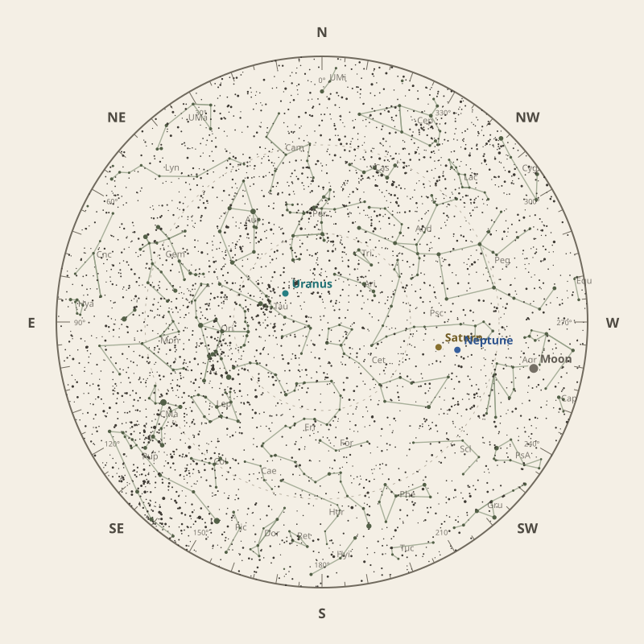

Monthly field almanac
December 2026
Observing reference for Malabar Coast, India.


The month in one sentence · at a glance
Geminids peak on 14 Dec 2026 under 22% Moon, with the radiant reaching about 60° before dawn.
- New Moon
- 9 Dec Darkest skies
- Full Moon
- 24 Dec Brightest skies
- Best dark window
- 14 Dec 11h 45m
Conditions now
Is the sky likely to cooperate?
Checking the sky near Malabar Coast, India…
Find your bearings
The mid-month sky at 10 pm.
Face the matching compass direction and read outward from the centre toward the horizon.

Night planner
Plan the sky for your date.
Choose an observing date to see astronomical darkness, Moon interference, Galactic Centre visibility and the strongest planets.
Best low-Moon dark periods this month
- 6:29 pm–6:13 am11h 45m · 22% Moon
- 6:28 pm–6:13 am11h 44m · 15% Moon
- 6:28 pm–6:12 am11h 44m · 10% Moon
What deserves attention
Top picks for December.
- Planets
Jupiter
Best monthly date at 88° altitude.
- Meteor showers
Geminids
Peak conditions: 22% Moon illumination; 60° altitude predawn.
- Occultations
HIP 51008 lunar occultation
3:36 am to 4:35 am; Moon at 51° altitude for the first listed contact.
- Planetary events
Saturn stationary point
Apparent motion changes direction.
- Planets
Neptune
Best monthly date at 78° altitude.


Moon and darkness
Read the lunar month.
Prefer minimum illumination for faint targets; bright lunar observing belongs near the fullest phase.
Complete lunar data →

Milky Way and deep sky
Recommended core sessions.
No recommended Milky Way core session is available this month.
Complete Milky Way data →

Planet visibility
Useful at twilight.
Evening
- Saturn29 Dec · 6:30 pm80° · Excellent
- Neptune22 Dec · 6:30 pm78° · Excellent
Overnight
- Uranus28 Dec · 10:00 pm81° · Excellent
Predawn
- Mars25 Dec · 5:00 am90° · Excellent
- Jupiter5 Dec · 5:30 am88° · Excellent
- Venus28 Dec · 6:30 am42° · Good
- Mercury1 Dec · 6:00 am9° · Poor
Other opportunities
Events worth noting.
- GeminidsPeak conditions: 22% Moon illumination; 60° altitude predawn.
- HIP 51008 lunar occultation3:36 am to 4:35 am; Moon at 51° altitude for the first listed contact.
- Saturn stationary pointApparent motion changes direction.


Data and downloads
Need every detail?
2 comet calculations are unavailable; they remain in the data library.
Occultation times use a smooth lunar limb; confirm grazing events with IOTA Occult 4.